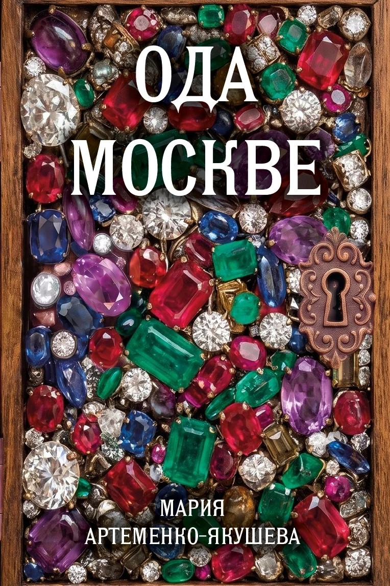

Сборник «Ода Москве» о любви и ироничных ситуациях в семье, остроумные высказывания детей и многое другое.
Фантастический рассказ о смелой девушке и честном парне «Ядерный костюмчик» посвящён отцу, Якушеву Владимиру Артемьевичу (1940–2026 гг.).
Пример страницы · черновой макет

Сборник «Ода Москве» о любви и ироничных ситуациях в семье, остроумные высказывания детей и многое другое.
Фантастический рассказ о смелой девушке и честном парне «Ядерный костюмчик» посвящён отцу, Якушеву Владимиру Артемьевичу (1940–2026 гг.).